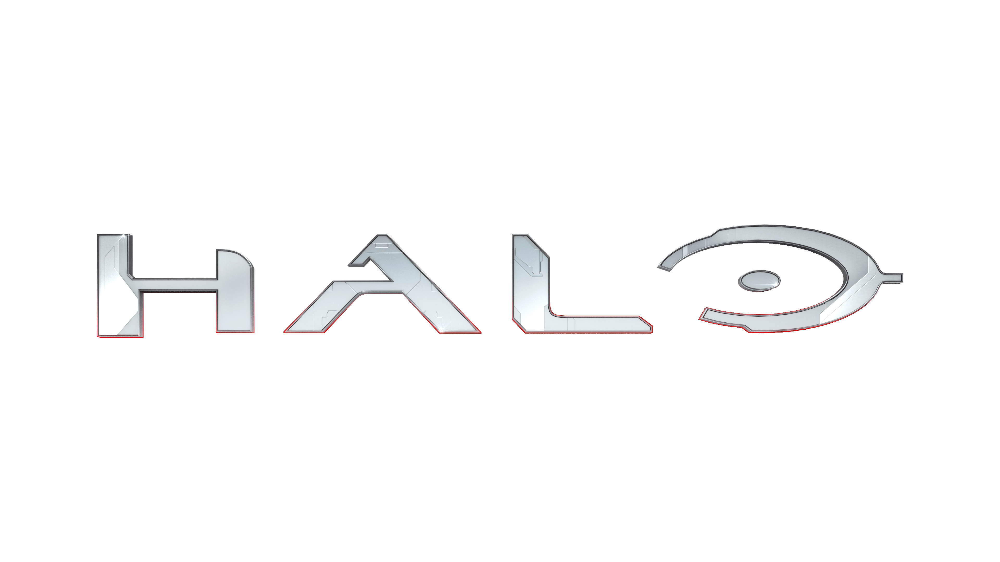
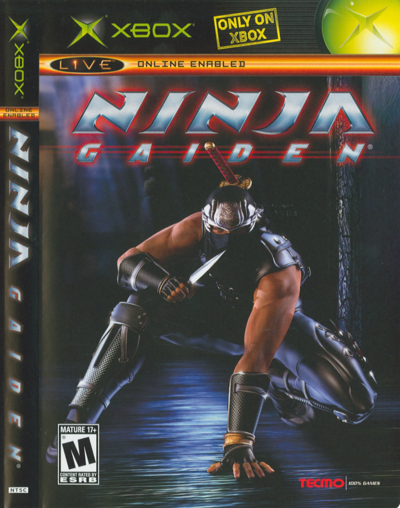

Everyone Know star wars as one of the most classic in both gaming and movie history Star Wars: Knights of the Old Republic is a
role-playing video game set in the Star Wars universe.
Developed by BioWare and published by LucasArts, the game was released for the Xbox on July 19, 2003. Stars Wars has many sequels with games such as
Star Wars Jedi: Fallen Order, Star Wars BattleFront 1 and 2 and even more games released for the xbox series as well.
Consoles: Star wars: Knight of the old Republic(XBOX)
Amount of Player(s): 1

Halo is a first person Shooter(FPS) and is an American military science fiction media franchise managed and developed by 343 Industries
and published by Xbox Game Studios.
The central focus of the games builds off the experiences of Master Chief John-117,
one of a group of supersoldiers codenamed Spartans, and his artificial intelligence (AI) companion, Cortana. Where its Humanity against aliens.
Consoles: XBOX and the XBOX series
Amount of Player(s): 1

Ninja Gaide created by Tecmo games and published by Xbox it features the ninja Ryu Hayabusa as its protagonist. Ninja Gaiden, known for its
cut-and-slash action game, took the action genre by storm with its unique and innovative gameplay, amazing story story, and mind-blowing graphics on the orginal Xbox.
It is a RPG in third person as you control the main prograginist in an effort to move and fight through enemies.
 Everyone Know star wars as one of the most classic in both gaming and movie history Star Wars: Knights of the Old Republic is a
role-playing video game set in the Star Wars universe.
Developed by BioWare and published by LucasArts, the game was released for the Xbox on July 19, 2003. Stars Wars has many sequels with games such as
Star Wars Jedi: Fallen Order, Star Wars BattleFront 1 and 2 and even more games released for the xbox series as well.
Everyone Know star wars as one of the most classic in both gaming and movie history Star Wars: Knights of the Old Republic is a
role-playing video game set in the Star Wars universe.
Developed by BioWare and published by LucasArts, the game was released for the Xbox on July 19, 2003. Stars Wars has many sequels with games such as
Star Wars Jedi: Fallen Order, Star Wars BattleFront 1 and 2 and even more games released for the xbox series as well.